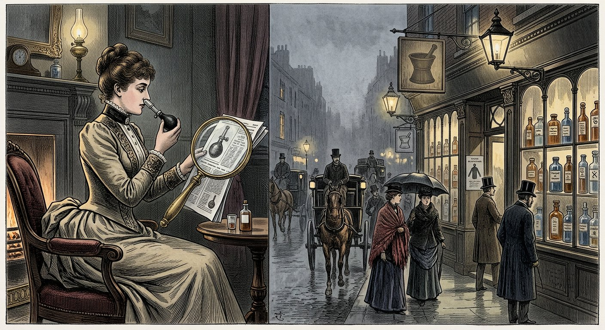
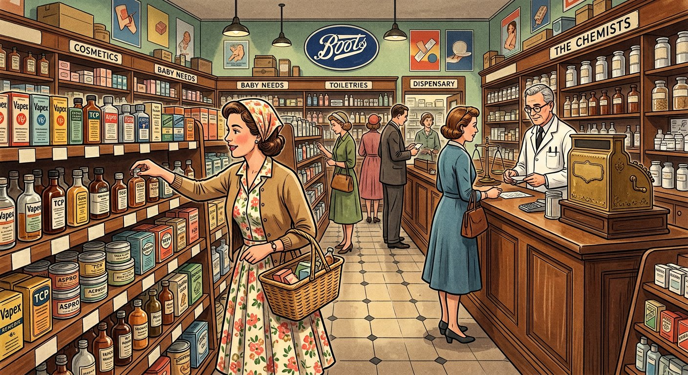
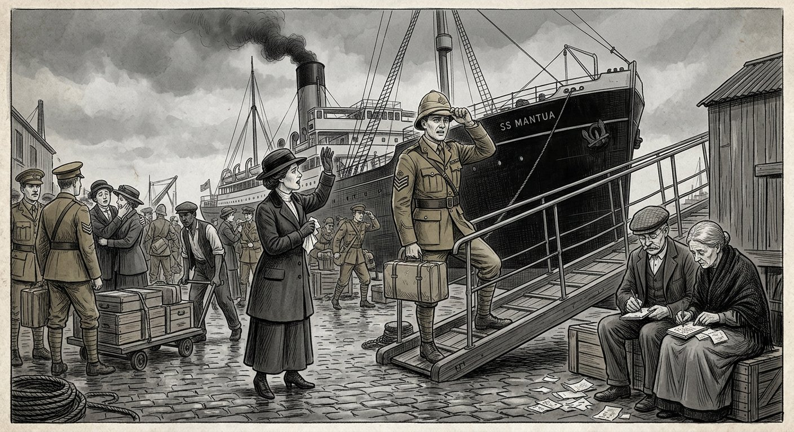
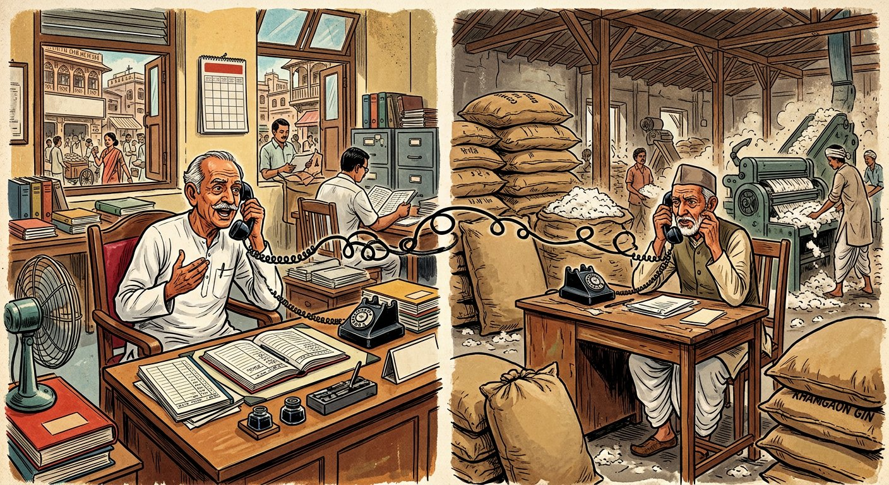
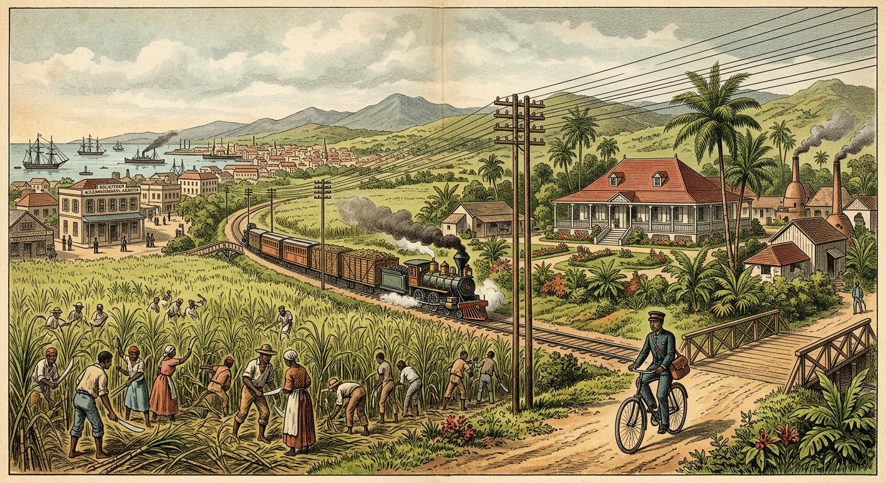
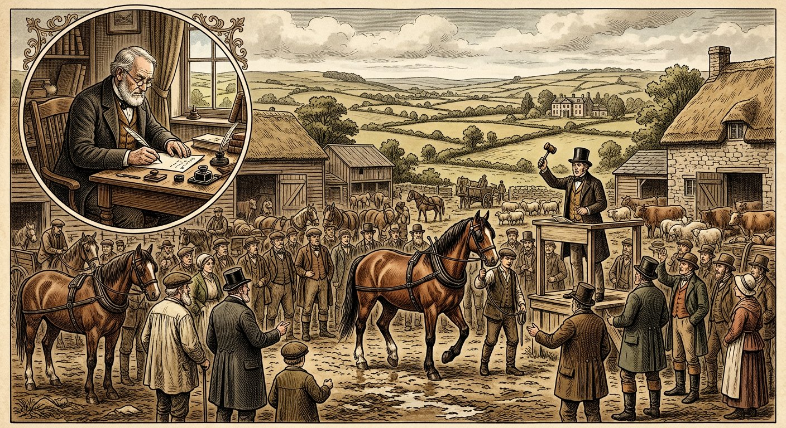

Topic 2: Formation of an Agreement — Offer, Acceptance, Revocation & Legal Intention
Indian Contract Act, 1872 — Sections 2 to 10 | Proposal • Offer vs invitation to treat • Kinds of offer • Communication of acceptance (postal vs instantaneous) • Revocation • Intention to create legal relations. Comprehensive deep notes strictly anchored in DU Case Material (2023) — Cases 1–7 (Book pp. 1–29) — with full statutory text, elements, illustrations, flowcharts, hypothetical case visuals, and DU-pattern PYQs with model answers.
📚 Primary source: DU Case Material LB-102 (2023)📜 Bare Act: ICA, 1872 (Ss. 2–10)⚖️ 7 DU cases in full IRAC++ format📝 12 PYQs + best model answers
Part A — Vocabulary first
S. 2 definitions + S. 10 — the formation vocabulary ⭐⭐
Every formation answer starts from S. 2's chain: proposal → acceptance → promise → agreement → contract. Memorise the clauses verbatim — DU awards for exact quotation.
Proposal S. 2(a) willingness + view to obtaining assent
+
Acceptance S. 2(b) assent signified → proposal becomes promise
+
Agreement S. 2(e) promise(s) forming consideration for each other
+
Contract S. 2(h)+10 agreement enforceable by law
S. 2(a) — Proposal: "When one person signifies to another his willingness to do or to abstain from doing anything, with a view to obtaining the assent of that other to such act or abstinence, he is said to make a proposal." S. 2(b): "When the person to whom the proposal is made signifies his assent thereto, the proposal is said to be accepted. A proposal, when accepted, becomes a promise." S. 2(c): proposer = promisor; acceptor = promisee. S. 2(e): "Every promise and every set of promises, forming the consideration for each other, is an agreement." S. 2(f): such promises = reciprocal promises. S. 2(g)/(h)/(i)/(j): unenforceable = void; enforceable = contract; enforceable at one's option = voidable; ceasing to be enforceable = becomes void. S. 2(d) — Consideration (for reference): act/abstinence/promise at the desire of the promisor by promisee or any other person.
S. 10 — What agreements are contracts: "All agreements are contracts if they are made by the free consent of parties competent to contract, for a lawful consideration and with a lawful object, and are not hereby expressly declared to be void." Second para: writing/witness/registration requirements under other laws unaffected. — Note: S. 10 doesn't mention "intention to create legal relations" expressly; Indian courts import it via S. 2(h) "enforceable by law" + Balfour (see Part E).
⭐ Exam skeleton for "Is there a contract?": (1) Proposal? (S. 2(a) — willingness + view to assent; or mere invitation — Part B). (2) Acceptance? (S. 2(b)/S. 7 — absolute, communicated — Part C). (3) Revoked? (Ss. 5–6 — Part D). (4) Legal intention? (Part E). (5) S. 10 elements (consent, capacity, consideration, object — later Topics).
Part B — S. 2(a) in action
Proposal — kinds of offer & invitation to treat ⭐⭐⭐
S. 2(a) has two ingredients: (i) signified willingness to do/abstain, (ii) with a view to obtaining the assent of the other. Ingredient (ii) is the great divider: statements that merely invite others to make offers — invitations to treat ("to chaffer", Willes J. in Spencer v Harding, via Carlill) — are not proposals.
Kinds of offer (with DU authority for each)
Kind
Meaning
DU case / example
General offer ⭐
Made to the world at large; ripens into contract with whoever performs conditions.
Carlill (Bowen LJ: "offer made to all the world … contract with that limited portion who come forward and perform"); reward ads (Williams v Carwardine; Lalman handbills).
Specific offer
Made to a definite person; only he can accept.
Felthouse (£30/15s offer to nephew); Harvey telegrams (had there been an offer).
Standing / continuing offer
Open for acceptance by performance over time until revoked.
Carlill (Lindley LJ: "This offer is a continuing offer. It was never revoked").
Cross offers
Identical offers crossing in post — no contract (no acceptance of an offer; S. 2(b) needs assent thereto).
Principle from S. 2(b) + Lalman (acceptance needs knowledge of offer).
Counter-offer
Qualified acceptance = rejection + new offer (S. 7(1)).
Felthouse (30 guineas vs £30 mismatch = no bargain); Harvey telegram 3 = fresh offer needing acceptance.
Offer vs invitation to treat — the master table ⭐⭐⭐
Statement
Offer or invitation?
Reasoning (quote in answers)
Reward ad with sincerity deposit (£1,000 bank)
✅ OFFER
Carlill: express promise + £1,000 "showing sincerity" negatives "mere puff"; intended to be acted on; extravagance no defence.
Goods on shelves with price tags (self-service)
❌ INVITATION
Boots (Goddard CJ): shopkeeper "willing to treat"; customer offers to buy at till; else property would pass on pick-up + customer couldn't change mind; pharmacist's supervision marks the acceptance point.
Quoting "lowest price £900" on inquiry
❌ INVITATION (mere price info)
Harvey (Lord Morris): "mere statement of lowest price … contains no implied contract to sell"; telegram 3 was the offer, never accepted.
"Stock of books to sell / houses to let" ads
❌ INVITATION to negotiate
Bowen LJ in Carlill (via Spencer v Harding): "offers to receive offers, offers to chaffer" — contrasted with binding reward offers.
Spencer v Harding (cited in Carlill); Harris v Nickerson (cited by Bowen LJ).
Tenders invited
❌ invitation; ✅ submitted tender = offer
Principle; UP S. 5 Explanation (Part D) bites on invited tenders kept open.
Test 1: Language Promise ("will pay") or puff/vague?
→
Test 2: Sincerity markers Deposit / definiteness / checkability?
→
Test 3: Who needs to assent? If speaker seeks your assent → offer; if he invites your offer → invitation
→
Test 4: Consequences Would "offer" reading cause absurdity (Boots: forced sales)? → invitation
⚠️ Carlill vagueness lesson: "no time fixed" didn't kill the offer — Lindley LJ construed it against the offeror (protection during epidemic / while in use / reasonable time after use — chemist + physician evidence to fix it). Bowen LJ: read "as the public would understand it" (during use). An offer need only be certain enough for a business construction — and ambiguity cuts against its author.
S. 3: communication of proposal/acceptance/revocation "deemed to be made by any act or omission … by which he intends to communicate … or which has the effect of communicating it." S. 4 (memorise the asymmetry): proposal complete when it comes to knowledge of offeree. Acceptance complete — as against proposer: when put in course of transmission, out of acceptor's power; as against acceptor: when it comes to proposer's knowledge. Revocation complete — as against maker: on despatch; as against recipient: on knowledge. (Ills. (a)–(c): house-letter; posted acceptance; telegram revocations.) S. 7: acceptance must be (1) absolute and unqualified; (2) in some usual and reasonable manner (or prescribed manner — else proposer may insist within reasonable time, else deemed accepted). S. 8: "Performance of the conditions of a proposal, or the acceptance of any consideration for a reciprocal promise … is an acceptance of the proposal." S. 9: proposal/acceptance in words = express; otherwise = implied (conduct).
Five acceptance rules every answer needs
Rule
Content + DU authority
1. Must be communicated ⭐
Mental assent ≠ acceptance. Felthouse: nephew's uncommunicated intention ("already sold" to auctioneer only) vested nothing; "If I hear no more … mine" couldn't impose silence-as-acceptance. Bhagwandas (Shah J.): "intent to accept … or even mental resolve … does not give rise to a contract … acceptance must be communicated … unless waived."
2. Offeror may waive/dictate the mode ⭐
Carlill (Bowen LJ): offeror may "expressly or impliedly intimate" that acting on the proposal suffices — "performance of the condition is sufficient acceptance without notification" (lost-dog example; Harris v Nickerson; Brogden). Lindley LJ: notice "need not precede performance"; continuing offer + notice-before-revocation suffices. = Indian S. 8.
3. Must be absolute & unqualified
S. 7(1): variance = counter-offer killing the original. Felthouse: £30 vs 30 guineas = "no complete bargain". Harvey: telegram 3 added terms → fresh offer, never accepted.
4. Needs knowledge of offer ⭐
Lalman (Banerji J.): "there can be no acceptance unless there is knowledge of the offer. Motive is not essential but knowledge and intention are." S. 8 performance "raises an inference of acceptance" only where the doer acts on the offer. (Williams v Carwardine / Gibbons v Proctor — performance-without-knowledge suffices — criticised via Pollock & Ashley, not followed.)
5. Silence is not acceptance
Felthouse: uncle "had no right to impose … a sale … unless he chose to comply with the condition of writing to repudiate." An offeror cannot force the offeree to speak-or-be-bound. (Contrast: waiver of notification in Carlill ≠ imposing silence as acceptance.)
Postal rule vs instantaneous communication — Bhagwandas ⭐⭐⭐
Post / telegram Acceptance complete when POSTED (S. 4, 1st limb; Adams v Lindsell; Dunlop v Higgins) — contract where posted
vs
Telephone / telex (instantaneous) Contract complete when acceptance HEARD/RECEIVED by offeror (Entores, Denning LJ — adopted by majority) — contract where heard
vs
Dissent (Hidayatullah J.) S. 4's expedition language covers telephone too — complete at Khamgaon where SPOKEN
Point
Majority (Shah J. + Bachawat J.)
Dissent (Hidayatullah J.)
Telephone nature
Parties "in a sense in presence of each other"; instantaneous speech; no third-agency intervention after connection (P&T control irrelevant).
Four classes: (1) heard → contract (place disputed); (2) known failure → no contract; (3) unknown failure, no repeat asked → contract at transmission point (S. 3); (4) repeat asked → no contract till repeated.
Postal exception basis
Adams (1818): "ad infinitum" logic; commercial expediency, not logic — "inroad upon consensus"; India follows (Baroda Oil Cakes).
Five English rationales: post office as agent; infinite-notification problem; proof of posting; denial difficulty; carrier beyond control. S. 4 = "peculiar modification" of this.
S. 4 reading
S. 4 fixes completion of communication, not place; "contract becomes complete … when acceptance … is intimated to the offeror" (unless special method agreed).
"Put in course of transmission … out of power" literally covers speaking into telephone; S. 4's two limbs = expedition theory codified; Entores can't override statute's "inflexibility".
Entores gaps (dissent)
Denning LJ's estoppel exception (offeror at fault for not asking repeat → bound though nothing heard) is inconsistent: where is that contract made? If unheard acceptances bind, why not expedition theory throughout?
Result
Majority: contract complete at Ahmedabad (where heard) → City Civil Court has jurisdiction → appeal dismissed. (Dissent: Khamgaon → appeal allowed.)
S. 4 illustration drill (must-practice): A posts offer Monday; B posts acceptance Wednesday; A posts revocation Tuesday, B receives Thursday. Revocation effective? No — acceptance complete against A on posting (Wednesday); revocation complete against B only on receipt (Thursday) — too late. Offer revoked only if revocation reaches before acceptance posted (S. 5).
Part D — Ss. 4, 5, 6
Revocation — windows & modes ⭐⭐⭐
S. 5 — Windows: "A proposal may be revoked at any time before the communication of its acceptance is complete as against the proposer, but not afterwards. An acceptance may be revoked at any time before the communication of the acceptance is complete as against the acceptor, but not afterwards." Illustration: A posts offer; B posts acceptance → A may revoke only before/at the moment B posts; B may revoke only before/at the moment his letter reaches A. S. 6 — Modes (a proposal is revoked):(1) by communication of notice of revocation by proposer to the other party; (2) by lapse of prescribed time (or reasonable time if none) without acceptance; (3) by failure to fulfil a condition precedent; (4) by death or insanity of proposer, if known to acceptor before acceptance. UP Amendment (Act 57 of 1976) — Explanation to S. 5: where an invitation to proposal conditions that responsive proposals stay open a specified time, and a proposal is made accepting that condition, it may not be revoked within such time. (Tender "keep-open" clauses made irrevocable in U.P.)
Offer posted Day 1 Proposer can revoke: Day 1 → moment acceptance POSTED
→
Acceptance posted Day 3 Offer IRREVOCABLE from here; acceptor can still revoke till receipt
→
Acceptance received Day 5 Acceptance IRREVOCABLE; contract fully complete both sides
S. 6 modes unpacked (with case hooks)
Mode
Detail
DU hook
(1) Notice
Must be communicated (S. 3–4: complete vs acceptor on knowledge). For general offers, revocation by same publicity as offer (advertised reward → advertised withdrawal before performance).
Carlill: "continuing offer … never revoked" — revocation possible any time before performance-complete acceptance.
(2) Lapse of time
Fixed time strictly; else reasonable time (perishable goods = short; land = longer). Acceptance after lapse = counter-offer.
Carlill "reasonable time" construction; Adams v Lindsell (in Bhagwandas): offeror selling before posted acceptance arrived = liable.
(3) Condition precedent
E.g. "accept by paying advance / by prescribed mode" — unfulfilled → offer dies (linked S. 7(2)).
Felthouse: nephew never fulfilled even the imposed "write to repudiate" structure — open offer only.
(4) Death/insanity
Auto-revocation only if known to acceptor before acceptance; unknown death + acceptance in ignorance = contract stands.
Classic S. 4+5 problem drill: "A offers by post; B accepts by post; A's revocation telegram reaches B before B posts." → No contract (revocation complete vs B on receipt, before acceptance complete vs A on posting). Reverse the order → contract. Always draw the Day 1/3/5 timeline in answers.
Part E — The unwritten element
Intention to create legal relations ⭐⭐
ICA S. 10 lists consent, capacity, consideration, object — but courts add, via S. 2(h) "enforceable by law", a further filter: did the parties intend legal consequences? Two presumptions + one sincerity test:
Situation
Presumption
Authority
Domestic / social agreements
❌ Presumed NO legal intention (rebuttable by express terms / necessary implication).
Balfour v Balfour (Atkin LJ): allowance arrangements "outside the realm of contracts altogether" though consideration "in form" exists; "each house is a domain into which the King's writ does not seek to run."
Commercial agreements
✅ Presumed YES (rebuttable — e.g. "binding in honour only" clauses).
Carlill commercial context + sincerity deposit; general principle.
Carlill (Lindley LJ: £1,000 deposit "showing sincerity" negatives mere puff; Bowen LJ: read as public would).
Atkin LJ's Balfour core (quote it): "There are agreements between parties which do not result in contracts … The ordinary example is where two parties agree to take a walk together, or where there is an offer and an acceptance of hospitality … [Husband-wife allowance agreements] do not result in contracts even though there may be … consideration … because the parties did not intend that they should be attended by legal consequences." — Plus the floodgates warning ("small courts … multiplied one hundredfold") and Warrington LJ's test: express terms or necessary implication needed to find a domestic contract.
Balfour limits (for balanced answers): presumption weakens where spouses are separated / about to separate (separation agreements = legal intention — Merritt v Merritt distinction); and consideration "in form" (wife's promise to maintain herself on £30) still couldn't save Balfour. Contrast Carlill: no family tie + £1,000 deposit + definite £100 promise = intention undeniable.
Part F — DU Case 1 (Book pp. 1–7)
DU Case 1 ★★ General offer + waiver of notification + puff vs promise
Carlill v Carbolic Smoke Ball Co., [1891–4] All ER Rep 127 (CA — Lindley, Bowen, A.L. Smith LJJ)
Ss. 2(a)/(b), 7, 8 ICA equivalents | Question: Was the £100 influenza reward ad a binding general offer accepted by performance? | Answer: Yes — definite promise + £1,000 sincerity deposit; performance = acceptance; notification waived; ample consideration. (Appeal dismissed with costs.)

Hypothetical visual — London, winter 1891–92: Mrs Carlill uses the smoke ball thrice daily on the faith of the £100 reward advertisement — then catches influenza.
Facts (detailed)
Ad (13 Nov 1891, Pall Mall Gazette, black-faced type): "£100 reward … to any person who contracts … influenza, colds, or any diseases caused by taking cold, after having used the ball three times daily for two weeks according to printed directions. £1,000 deposited with Alliance Bank … showing sincerity." Ball 10s post free; refill 5s; 27 Princes Street.
Performance: Mrs Carlill bought a ball at an Oxford Street chemist, used it 3× daily for weeks (mid-Nov 1891 – 17 Jan 1892), caught influenza. Husband wrote claiming £100; refused → suit.
Trial (Hawkins J. + special jury): facts undisputed; defendants denied any contract, alternatively wagering contract → judgment for plaintiff → appeal.
Issues
Offer to the world or mere puff/invitation to negotiate?
Was acceptance notified (and need it be)?
Too vague (no time limit)?
Any consideration?
Defendants: no contract with anyone in particular; mere puff; insurance policy / wager; vague as to time and persons; no check on claimants; no consideration (use ≠ benefit — stolen balls hypothetical); acceptance never notified.
Plaintiff: distinct £100 promise; £1,000 deposit proves sincerity; performed conditions on faith of ad; use benefits defendants (sales) + inconveniences her.
Decision & reasoning
Lindley LJ: (a) Express promise — £1,000 deposit negatives puff; promisor's intent to pay plain. (b) General offer: "offer to anybody who performs the conditions … performance … is the acceptance" (Williams v Carwardine + reward cases). (c) Notification: general rule yes, but offeror may waive (Brogden, Blackburn) — continuing offer, never revoked; notice contemporaneous with performance suffices; language shows no separate notice expected. (d) Vagueness: construed against author → protection within reasonable time after use (chemist + physician evidence to fix); plaintiff covered. (e) Consideration: use → public confidence → sales benefit; plus user's inconvenience/detriment (3× daily for 2 weeks at request). Insurance/wager contentions dismissed.
Bowen LJ: document is an offer, not contract; read "as the public would understand it" — post-publication users catching cold claim; protection during use (ball lasts months, refill 5s). Not "contract with all the world" fallacy: offer to all → contract with performers (Spencer v Harding, Willes J. — here, unlike book-stock ads, an undertaking to pay on condition). Notification for offeror's benefit → waivable; lost-dog example (police needn't write first). Extravagance no defence: "if … it pays him to make them … bound by them."
A.L. Smith LJ: concurring. Order: appeal dismissed with costs.
Ratio: (1) A definite reward promise + sincerity markers = general offer, accepted by performance (S. 8). (2) Offeror may impliedly waive notification — nature of transaction decides. (3) Ambiguity construed contra proferentem; business construction saves certainty. (4) Benefit to promisor or detriment to promisee = consideration.
Exam use: cite Carlill for general offers, S. 8 acceptance, waiver of notice, puff-vs-promise, contra proferentem certainty, and consideration-by-detriment.
Part G — DU Case 2 (Book pp. 8–10)
DU Case 2 ★★ Display = invitation; customer = offeror
Pharmaceutical Society of Great Britain v Boots Cash Chemist (Southern) Ltd., (1952) 2 All ER 456 (Goddard CJ)
S. 2(a) ICA; S. 18(1), Pharmacy & Poisons Act 1933 | Question: In self-service shops, is display an offer (sale complete on pick-up) or invitation (sale at till)? | Answer: Invitation — customer offers to buy; sale completes at cash desk under pharmacist supervision. (Judgment for defendants.)

Hypothetical visual — Edgware, 1952: a customer lifts a priced bottle from the "Chemist's dept." shelf — offer or acceptance? The till (and the pharmacist) decide.
Facts (detailed)
System: Boots' Burnt Oak Broadway shop: customers take priced goods from shelves to cash desk; assistant states price, takes money. "Chemist's dept." shelves held Part I poisons (minute, safe doses, no prescription needed). Every buyer passed a qualified pharmacist's scrutiny before leaving.
Statute: S. 18(1), Pharmacy & Poisons Act 1933: Part I poison sales lawful only by authorised seller, on registered premises, by/under supervision of a registered pharmacist.
Special Case (Ord. 34): Society alleged sales completed before pharmacist supervision (on pick-up) → unlawful.
Issue
Is the shop's display an offer to sell (accepted by pick-up) or an invitation (customer offering to buy at the till)?
Society: "Help yourself to priced articles" = offer to sell to all comers (citing Carlill/Bowen LJ on indicated-mode acceptance) → sale complete on pick-up, unsupervised → unlawful.
Boots: nothing revolutionary — same as traditional counter display; exposure = willingness to treat, not offer; contract completes only if shopkeeper accepts customer's offer.
Decision & reasoning (Goddard CJ)
Held: invitation. Customer "informed that he could pick up an article and bring it to the shop-keeper, the contract being completed if the shop-keeper accepted the customer's offer to buy. The offer is an offer to buy, not an offer to sell."
Common-sense consequences: pick-up-as-acceptance would pass property instantly — customer could force sale of the only copy / dangerous article, and could never change his mind (bookshop example: "sorry, promised to another customer").
Pharmacist's till-side presence confirms shopkeeper's freedom to complete or refuse.
Carlill distinguished: reward ads undertake to pay on condition; shelf displays undertake nothing.
Order: judgment for defendants — sale under pharmacist supervision, lawful.
Ratio:Display of priced goods = invitation to treat in both counter and self-service shops; customer offers, shopkeeper accepts (at till). Consequence-based reasoning guards the rule.
Exam use: the lead invitation-to-treat authority; pair with Carlill (offer) and Harvey (price info) for "offer or invitation?" triads; also useful for S. 2(a) "view to obtaining assent" analysis.
Part H — DU Case 3 (Book pp. 11–14)
DU Case 3 ★★ No legal intention in domestic arrangements
Balfour v Balfour, (1918–19) All ER 860 (CA — Warrington, Duke, Atkin LJJ)
S. 2(h) "enforceable by law" | Question: Was a husband's £30/month maintenance promise to his wife a legally binding contract? | Answer: No — amicable domestic arrangement with no intent of legal consequences, though consideration "in form" existed. (Appeal allowed; Sargent J. reversed.)

Hypothetical visual — 8 August 1916: Mr Balfour sails for Ceylon leaving his arthritic wife in England with £30 a month — a husband's honour, not a contract.
Facts (detailed)
Marriage: married Aug 1900; husband Director of Irrigation, Ceylon; lived there together (England visits 1906; wife's 1908 operation). Nov 1915: both to England on leave, intending to return.
Parol "agreement" (8 Aug 1916): husband's leave expired; wife (rheumatoid arthritis) medically advised to stay till Nov. Husband gave cheque £24 (8–31 Aug) + promised £30/month till she joined him; figures jotted together (£22 expenses + £12 → £34 → agreed £30). Wife admitted they lived in amity, no agreement to separate.
Letters: later correspondence (incl. extra housekeeping money) threw "no light" on legal position. Differences developed; separation prolonged.
Claim: wife sued for arrears as agreed allowance (she to support herself without further maintenance claims). Sargent J. found a "definite bargain" + consideration → decreed. Husband appealed.
Issue
Did the 8 Aug 1916 arrangement amount to a contract in the legal sense — i.e., was it intended to be legally binding?
Wife: definite £30 bargain, re-affirmed twice; her promise to maintain herself = consideration; enforceable contract.
Husband: no contract ever entered — friendly domestic assessment of needs; never intended legal consequences.
Decision & reasoning
Warrington LJ: no express bargain by wife (no undertaking to treat £30 as full satisfaction under all changes); impossible to imply mutual fettering "whatever happened" — matter "reduces itself to absurdity"; else every domestic promise suable. Husband "bound in honour", not law. Test: contract needs express terms or necessary implication.
Atkin LJ (classic): agreements ≠ contracts — "walk together … hospitality" examples. Spouse allowance agreements, even with consideration "in form" (benefit/detriment definition recited), are "outside the realm of contracts altogether" absent legal intent — else courts "multiplied one hundredfold". Domestic code: "terms may be repudiated, varied, renewed"; "each house is a domain into which the King's writ does not seek to run." Onus on wife — not discharged; parties contemplated reunion, not all-circumstances fettering (medical expenses!).
Duke LJ: concurring. Order: appeal allowed; judgment for husband.
Ratio:Domestic/social agreements presumptively lack contractual intention — consideration alone doesn't make a contract; intention proved only by express terms or necessary implication.
Exam use: the intention authority; quote Atkin LJ; contrast separated-spouse/commercial cases; pair with Carlill (commercial + sincerity = intention present).
Part I — DU Case 4 (Book pp. 15–16)
DU Case 4 ★★ No knowledge of offer → no acceptance (S. 8 needs intent)
Ss. 2(b), 8 ICA | Question: Can a servant who traced a missing boy before learning of the Rs 501 reward claim it? | Answer: No — no knowledge → no acceptance; plus pre-existing duty = no consideration. (Revision dismissed with costs.)
Hypothetical visual — Hardwar, January 1913: the munim traces the boy to Rishikesh — but the reward handbills were issued only after he left, and he served a pre-existing duty.
Facts (detailed)
Search: defendant's nephew absconded (Jan 1913). Defendant sent servants searching; plaintiff (firm's munim) sent to Hardwar with fare + expenses.
Reward:after plaintiff's departure, defendant issued handbills: Rs 501 to finder. Some reached plaintiff at Hardwar (timing/knowledge disputed).
Finding: plaintiff traced boy to Rishikesh, wired defendant, who fetched him to Cawnpore; gave plaintiff two sovereigns + Rs 20. Plaintiff served 6 more months, then dismissed → sued for Rs 499 balance, falsely pleading a pre-departure promise (found untrue).
Lower court dismissed → revision.
Issue
Does performance of a rewarded act without knowledge of the offer (and under pre-existing duty) entitle the performer to the reward?
Plaintiff: privity unnecessary; neither motive nor knowledge essential — mere performance suffices (Williams v Carwardine; Gibbons v Proctor).
Defendant: reward claims sound only in contract — need acceptance + assent; none here; plaintiff already duty-bound to search.
Decision & reasoning (Banerji J.)
Knowledge essential: "there can be no acceptance unless there is a knowledge of the offer. Motive is not essential but knowledge and intention are." S. 8 performance "raises an inference of acceptance" — but inference needs intent to accept (Ashley: "contract arises upon performance … during continuance of the offer").
English cases rejected:Williams/Gibbons (performance alone suffices) "adversely criticised" in common law jurisprudence and Ashley (pp. 16, 23–24) — not followed.
Second string — pre-existing duty: though searching wasn't a munim's ordinary duty, plaintiff "undertook that particular duty" before the reward → subsisting obligation → performance no consideration for reward promise.
Order: revision dismissed with costs.
Ratio: (1) Acceptance requires knowledge of + intent to accept the offer — S. 8 performance without knowledge is no acceptance. (2) Performance of a pre-existing duty is no consideration.
Exam use: lead "knowledge of offer" authority; contrast Carlill (acted "on faith of advertisement"); also use for pre-existing-duty consideration points.
Part J — DU Case 5 (Book pp. 17–27)
DU Case 5 ★★ Telephone contracts complete where acceptance HEARD (majority)
Bhagwandas Goverdhandas Kedia v Girdharilal Parshottamdas & Co., AIR 1966 SC 543 (Shah J. + Bachawat J. majority; Hidayatullah J. dissenting)
Ss. 2(a)/(b), 3, 4, 5 ICA; Entores v Miles Far East | Question: Where is a telephone-concluded contract made — where acceptance spoken (Khamgaon) or heard (Ahmedabad)? | Answer: Where heard — telephone = instantaneous presence; postal exception inapplicable. (Majority: appeal dismissed; Ahmedabad court has jurisdiction.)

Hypothetical visual — 22 July 1959: a long-distance telephone bargain for cotton seed cake between Ahmedabad and Khamgaon — spoken in one city, heard in another.
Facts (detailed)
Oral contract (22 July 1959, long-distance telephone): Ahmedabad plaintiffs bought cotton seed cake from Khamgaon defendants (Kedia Ginning Factory & Oil Mills). Defendants defaulted → suit for Rs 31,150 in Ahmedabad City Civil Court.
Plaintiffs: cause of action at Ahmedabad — defendants offered, plaintiffs accepted at Ahmedabad; delivery + bank payment at Ahmedabad.
Defendants: plaintiffs offered by phone, defendants accepted at Khamgaon; delivery + payment at Khamgaon → no jurisdiction. S. 4's expedition rule applies to all modes; English common-law elastic rules irrelevant.
Trial court: part of cause of action at Ahmedabad (acceptance communicated there) → jurisdiction upheld → appeal to SC.
Issues
Does S. 4's postal (expedition) rule extend to telephone acceptances?
Where is a telephone contract made — spoken or heard end?
Defendants (appellants): Ss. 3–4 apply uniformly whatever the mode; acceptance complete when put in transmission (spoken into phone at Khamgaon) → contract at Khamgaon; UK decisions (no statutory provisions) inapposite.
Plaintiffs: offer itself is part of cause of action (lies where offeror acted); alternatively intimation of acceptance is essential → contract where intimation received (Ahmedabad).
Decision & reasoning
Shah J. (majority): (a) No contract without communicated acceptance (mental resolve insufficient) unless waived. (b) S. 4 governs completion of communication, not place; read with S. 2, contract complete when acceptance intimated to offeror (absent agreed special method). (c) Postal exception (Adams v Lindsell 1818 — "ad infinitum"; Dunlop v Higgins; Baroda Oil Cakes): commercial expediency, "inroad upon consensus", applies where post/telegram authorised. (d) Telephone differs: parties "in a sense in presence", instantaneous speech, no third-agency intervention (P&T control rejected). (e) Entores (Denning LJ) adopted: instantaneous communications "stand on a different footing" — complete where acceptance received. European consensus noted; US "spoken-district" view rejected. Draftsman (1872) never contemplated telephones → ordinary rule applies. Result: contract at Ahmedabad → appeal dismissed.
Hidayatullah J. (dissent): (a) Statute's "adamant" language must govern, not new foreign theories. (b) Post-office-agent + 5 English rationales; S. 4 = "peculiar modification" of postal rule. (c) Entores dissected: Denning's unheard-but-binding estoppel case exposes incoherence — where is that contract made? (d) Four telephone classes (heard / known failure / unknown failure-no-repeat / repeat asked) — class 3 binds at transmission point via S. 3. (e) Speaking into phone = "put in course of transmission … out of power" literally → contract at Khamgaon; proposer's denial shouldn't defeat statute; tape-recording proves speech. Result: appeal allowed.
Ratio (majority): (1) Communication of acceptance is the general rule; postal/telegram expedition is a narrow expediency exception. (2) Telephone/telex = instantaneous presence → contract complete where acceptance is received/heard. (3) S. 4 addresses completion of communication; place follows intimation (absent contrary agreement).
Exam use: THE authority for post-vs-instantaneous; always present majority + Hidayatullah dissent (four classes + estoppel critique fetch top marks); link S. 4 limbs + S. 5 windows.
Part K — DU Case 6 (Book p. 28)
DU Case 6 ★★ Price quotation ≠ offer
Harvey v Facey, [1893] AC 552 (PC — Lord Morris)
S. 2(a) ICA | Question: Did "Lowest price £900" telegram + "we agree to buy" reply make a contract? | Answer: No — price statement implied no offer to sell; the buyers' telegram was itself an unaccepted offer. (Appeal dismissed.)

Hypothetical visual — Jamaica, 7 October 1891: three telegrams chase L.M. Facey down the Kingston–Porus railway line — but a price is not a promise.
Facts (detailed)
Telegram 1 (Harvey, Kingston solicitors → Facey "on the train for Porus"): "Will you sell us Bumper Hall Pen? Telegraph lowest cash price — answer paid." (Two questions: willingness + price.)
Telegram 2 (Facey, same day): "Lowest price for Bumper Hall Pen £900" — answered the price question only.
Telegram 3 (Harvey → Facey "on train at Porus"): "We agree to buy Bumper Hall Pen for £900 asked by you. Please send title deed … early possession."
Facey refused to sell → suit for specific performance / breach.
Issue
Did telegram 2 contain an (implied) offer to sell at £900, accepted by telegram 3?
Harvey: telegram 2 must be read as answering "yes" to willingness + naming price = unconditional offer; telegram 3 accepted → completed contract ("contract must appear by the telegrams").
Facey: named a price only; never offered to sell; telegram 3 was an offer to him, never accepted.
Decision & reasoning (Lord Morris)
Telegram 2 is "precise answer to a precise question, viz, the price" — binding Facey "except to the extent it does by its terms, viz, the lowest price. Everything else is left open."
No implied "yes" to willingness — "nothing to support that contention."
Telegram 3 therefore "cannot be treated as an acceptance of an offer to sell … it is an offer that required to be accepted by Facey. The contract could only be completed if Facey had accepted."
Principle: "mere statement of the lowest price … contains no implied contract to sell at that price to the persons making the inquiry."
Ratio:Supplying price information ≠ offering to sell; a reply purporting to "accept" a non-offer is itself a counter/fresh offer needing acceptance.
Exam use: pair with Boots (invitation) vs Carlill (offer) — the quotation middle case; also demonstrates S. 7 counter-offer mechanics.
Part L — DU Case 7 (Book p. 29)
DU Case 7 ★★ Silence cannot be prescribed as acceptance
Felthouse v Bindley, (1862) 11 CB 869 (Willes J. + Keating J.)
Ss. 2(b), 3, 7(2) ICA | Question: Did "If I hear no more … horse mine at £30/15s" + nephew's silence + "already sold" remark pass property? | Answer: No — no communicated acceptance; silence can't be imposed as acceptance. (Plaintiff had no right to complain of auction sale.)

Hypothetical visual — February 1861: the nephew tells the auctioneer the horse is "already sold" — but tells his uncle nothing. Silence, the court holds, is not acceptance.
Facts (detailed)
Dec 1860: uncle–nephew talk: uncle thought he bought horse for £30; nephew thought he sold for 30 guineas (£31.50) → "clearly no complete bargain."
1 Jan 1861 (nephew): "you are labouring under a mistake … 30 guineas was the price … you never heard me say less."
2 Jan 1861 (uncle): admits 30 guineas was the price; "I will split the difference. If I hear no more about him, I consider the horse mine at £30/15s." → no complete bargain; open offer.
25 Feb 1861: nephew's farming-stock auction; horse catalogued; nephew told auctioneer (defendant) it was "already sold" — but never communicated anything to uncle. Auctioneer sold it → uncle sued auctioneer for conversion.
Issue
Had property passed to the uncle before 25 Feb — i.e., was the 2 Jan offer ever accepted?
Uncle (plaintiff): nephew intended him to have the horse ("already sold") and never repudiated → silence = acceptance per offer terms → property vested → auctioneer liable.
Auctioneer (defendant): no acceptance was ever communicated to the offeror; no bargain; no property passed.
Decision & reasoning
Willes J.: (a) No bargain on 2 Jan. (b) Uncle "had no right to impose upon the nephew a sale … unless he chose to comply with the condition of writing to repudiate." (c) Nephew could have bound uncle by writing; uncle could have retracted before acceptance — it "stood an open offer." (d) Nephew's uncommunicated intention ("intended his uncle to have the horse") + remark to a third party = "nothing to bind himself" → no vesting.
Keating J.: concurring — "A proposal had been made, but … no acceptance binding the nephew."
Ratio: (1) Acceptance must be communicated to the offeror — mental assent / third-party remarks don't do. (2) An offeror cannot impose silence as acceptance (no duty to repudiate). (Open offer revocable any time before acceptance.)
Exam use: the silence rule; contrast Carlill (waiver of notification where performance suffices ≠ imposing silence); use for S. 3/S. 7(2) "usual and reasonable manner" discussions.
Part M — Visual revision
Master flowcharts & comparison tables
Flowchart 1 — "Is there a binding agreement?" (every problem)
1. Proposal? S. 2(a): willingness + view to assent? Or invitation (Boots/Harvey)?
→
2. Acceptance? Absolute (S. 7) + with knowledge (Lalman) + communicated (Felthouse) / S. 8 performance (Carlill)?
→
3. Timing? Revoked first (Ss. 5–6)? Lapsed? Counter-offer killed it?
Q1. Define proposal. Distinguish between offer and invitation to treat with illustrations. (15 marks)
Model answer: (1) Quote S. 2(a) — willingness + view to obtaining assent (two ingredients). (2) Invitation defined (Spencer v Harding "to chaffer" via Carlill). (3) Triad table: Carlill (offer — promise + £1,000 sincerity) vs Boots (display — customer offers at till; consequence reasoning) vs Harvey (price quote — "everything else left open"). (4) Four-test flowchart (language, sincerity, who assents, consequences). (5) Auction/tender/advertisement applications. Conclude: S. 2(a)(ii) is the divider.
Q2. "An offer to all the world ripens into a contract with anybody who performs its conditions." Discuss with Carlill. (10 marks)
Model answer: (1) Facts + £1,000 deposit. (2) Lindley LJ: general offer; performance = acceptance; continuing offer never revoked. (3) Bowen LJ: "offer to all, contract with performers" (Spencer v Harding; not book-stock ads). (4) Notification waived by nature of transaction (lost-dog; Harris v Nickerson; Brogden) = S. 8. (5) Vagueness cured contra proferentem (reasonable time). (6) Consideration dual (sales benefit + user detriment). Outcome: appeal dismissed.
Q3. A picks up a medicine bottle in a self-service store and insists on buying it. The chemist refuses. Advise. (7 marks)
Model answer: Chemist wins — Boots. (1) Display = invitation to treat; customer makes the offer at the till. (2) No acceptance yet → no contract; shopkeeper free to refuse (only-copy book example). (3) Property passes only on till acceptance; customer may equally change mind. (4) Carlill distinguished (no undertaking to sell on condition). Note pharmacist-supervision compliance.
Q4. Explain the rules of communication of proposal, acceptance and revocation under Ss. 3–5. Illustrate with the S. 4 illustrations. (15 marks)
Model answer: (1) Quote S. 3 (act/omission intending/having effect). (2) Quote S. 4 asymmetry + Ills. (a) proposal-to-knowledge, (b) posted-acceptance split, (c) telegram revocations. (3) S. 5 windows + Illustration (revoke offer before/at posting; revoke acceptance before/at receipt). (4) Day 1/3/5 timeline + worked problem (revocation reaching before posting kills; after posting too late). (5) Instantaneous modification (Bhagwandas majority). (6) UP S. 5 Explanation note.
Q5. A offers B by post on Monday; B posts acceptance Wednesday; A's revocation reaches B on Tuesday / Thursday. Decide both cases. (7 marks)
Model answer: (1) Tuesday receipt: revocation complete vs B on knowledge (S. 4) BEFORE acceptance complete vs A on posting (S. 4) → offer revoked, no contract (S. 5). (2) Thursday receipt: acceptance complete vs A on Wednesday posting → offer already irrevocable → contract formed (revocation too late). (3) Add: B could still revoke his acceptance by faster means reaching A before Wednesday's letter (S. 5, 2nd limb).
Q6. Discuss where a contract is concluded when parties negotiate by (a) post, (b) telephone. Refer to Bhagwandas. (15 marks)
Model answer: (1) Facts (22 July 1959 cotton cake call; Rs 31,150; Ahmedabad vs Khamgaon jurisdiction). (2) General rule: communicated acceptance (mental resolve insufficient). (3) (a) Post: expedition exception — complete on posting (Adams "ad infinitum", Dunlop, Baroda Oil Cakes) — contract where posted. (4) (b) Telephone (majority): instantaneous presence, no third agency → Entores adopted → complete where heard (Ahmedabad); S. 4 = completion, not place. (5) Hidayatullah dissent: S. 4 literal expedition covers phones; four classes; Denning estoppel incoherence; Khamgaon. (6) Result 2:1 — appeal dismissed. Conclude with exam significance.
Q7. "Silence cannot amount to acceptance." Discuss with Felthouse v Bindley. (10 marks)
Model answer: (1) Facts (£30 vs 30 guineas; "If I hear no more … mine at £30/15s"; "already sold" to auctioneer; 25 Feb sale). (2) Willes J.: no bargain 2 Jan; no right to impose write-or-be-bound; open offer revocable; uncommunicated intent + third-party remark vest nothing. (3) Keating J. concurrence. (4) Principles: S. 2(b)/S. 3 communication to offeror; S. 7(2) usual/reasonable manner can't be perverted into silence. (5) Contrast Carlill waiver (performance-suffices ≠ silence-imposed). Ratio + exam use.
Q8. A offers a reward for finding his dog. B, unaware of the offer, finds and returns the dog. Can B claim? (7 marks)
Model answer: No — Lalman. (1) Contract needs acceptance; acceptance needs knowledge + intention ("motive not essential but knowledge and intention are"). (2) S. 8 performance infers acceptance only when done on the offer (Ashley). (3) Williams/Gibbons rejected via Pollock/Ashley criticism. (4) Contrast Carlill (acted "on faith of advertisement"). B's unknowing return = no acceptance → no contract → no reward. (Add pre-existing-duty second string if B were A's servant.)
Q9. Discuss intention to create legal relations as an element of contract, with Balfour v Balfour. (10 marks)
Model answer: (1) S. 10 + S. 2(h) "enforceable" import intention. (2) Balfour facts (£30/month, amity, Sargent J. decreed). (3) Warrington LJ: express-or-necessary-implication test; absurdity of implied mutual fettering; honour vs law. (4) Atkin LJ: walk/hospitality analogies; consideration "in form" insufficient; floodgates; "King's writ" passage; onus undischarged. (5) Appeal allowed. (6) Presumptions table (domestic no / commercial yes / puff test via Carlill) + separation-agreement limit.
Q10. A wires B: "Will you sell your car? Telegraph lowest price." B replies: "Lowest price Rs 5 lakh." A replies: "I agree to buy at Rs 5 lakh." Is there a contract? (7 marks)
Model answer: No — Harvey v Facey. (1) B's wire answers only the price question; "mere statement of lowest price contains no implied contract to sell — everything else left open." (2) No implied "yes" to willingness. (3) A's reply = fresh offer requiring B's acceptance (S. 7) — never given. (4) "Contract must appear by the telegrams" — none does. Contrast Carlill (undertaking on condition = offer).
Q11. Explain the modes of revocation of proposal under S. 6. (10 marks)
Model answer: (1) Quote S. 6 four modes + S. 5 windows. (2) Notice: communicated revocation; general offers need equal publicity (Carlill "never revoked"). (3) Lapse: fixed/reasonable time; late acceptance = counter-offer (Adams context). (4) Condition precedent failure (S. 7(2) link; Felthouse open-offer structure). (5) Death/insanity with pre-acceptance knowledge (Lalman knowledge theme). (6) UP Explanation (tender keep-open irrevocability). (7) Worked timeline example.
Q12. Write short notes on: (a) S. 8 acceptance by performance, (b) counter-offer, (c) express vs implied promises (S. 9). (3×5 marks)
Model answer: (a) Quote S. 8; Carlill (use = acceptance, notice waived); Lalman limit (needs knowledge + intent); Bowen lost-dog example. (b) S. 7(1) absolute/unqualified; variance kills original + proposes anew; Harvey telegram 3; Felthouse £30/guineas mismatch. (c) Quote S. 9; words vs conduct (nod, performance, past dealing); Bhagwandas (nod/act intimating assent); Carlill conduct-acceptance as implied promise.
Part O — Last-mile
One-page revision capsule + exam strategy
Must-quote line
Source
"Signifies willingness … with a view to obtaining assent" → proposal
S. 2(a)
"Proposal, when accepted, becomes a promise"
S. 2(b)
Acceptance: vs proposer on posting; vs acceptor on knowledge
S. 4
"Absolute and unqualified … usual and reasonable manner"
S. 7
"Performance of the conditions … is an acceptance"
S. 8
"Offer to all the world … contract with performers"
Carlill (Bowen LJ)
"No acceptance unless knowledge … knowledge and intention"
Lalman (Banerji J.)
"Outside the realm of contracts altogether"
Balfour (Atkin LJ)
⭐ Exam strategy: (1) Quote S. 2(a)/2(b)/4/5/7/8 verbatim — half the marks. (2) Run the Part M flowchart (proposal → acceptance → timing → intent). (3) Draw the Day 1/3/5 timeline for every post problem. (4) In telephone problems, give majority + Hidayatullah dissent. (5) Offer/invitation triads: always cite Carlill–Boots–Harvey together. (6) Traps: silence ≠ acceptance; knowledge needed; revocation needs receipt; domestic presumption; late acceptance = counter-offer.
Case–judge–court map: 1 Carlill — Lindley/Bowen LJJ, CA (1892) · 2 Boots — Goddard CJ, KB (1952) · 3 Balfour — Warrington/Atkin LJJ, CA (1919) · 4 Lalman — Banerji J., All. (1913) · 5 Bhagwandas — Shah J. (majority), Hidayatullah J. (dissent), SC (1966) · 6 Harvey — Lord Morris, PC (1893) · 7 Felthouse — Willes J., CP (1862).
Topic 2 • Formation of an Agreement (Ss. 2–10) • DU LLB LB-102 • Strictly from DU Case Material Cases 1–7 (Book pp. 1–29) + ICA bare text • End of notes — all the best for the exam! 🎓